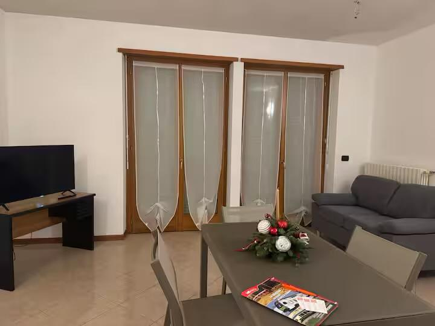
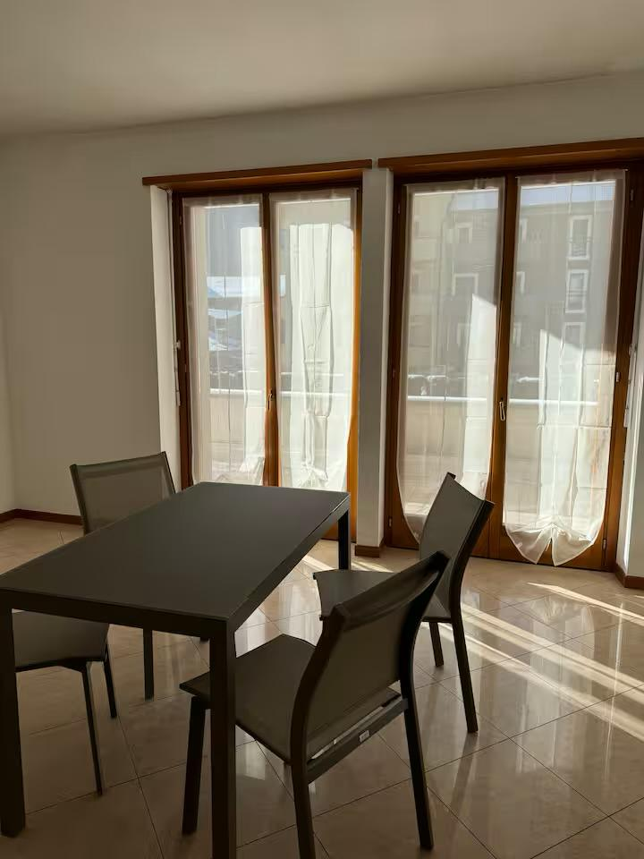
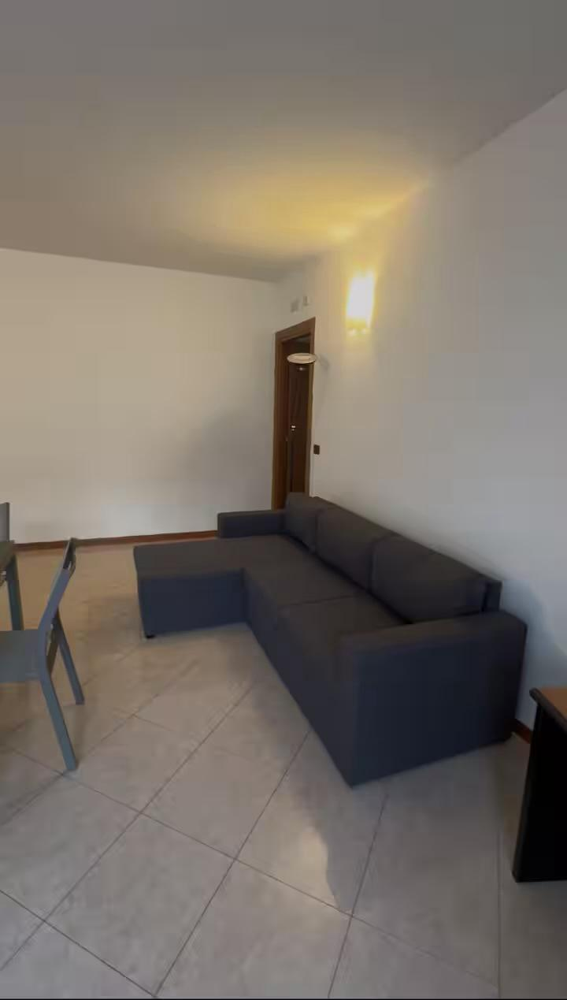
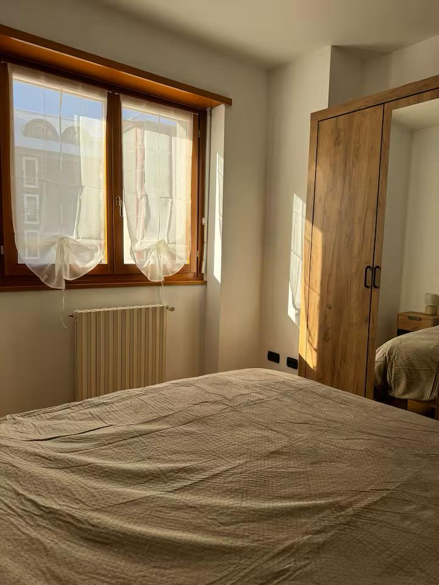
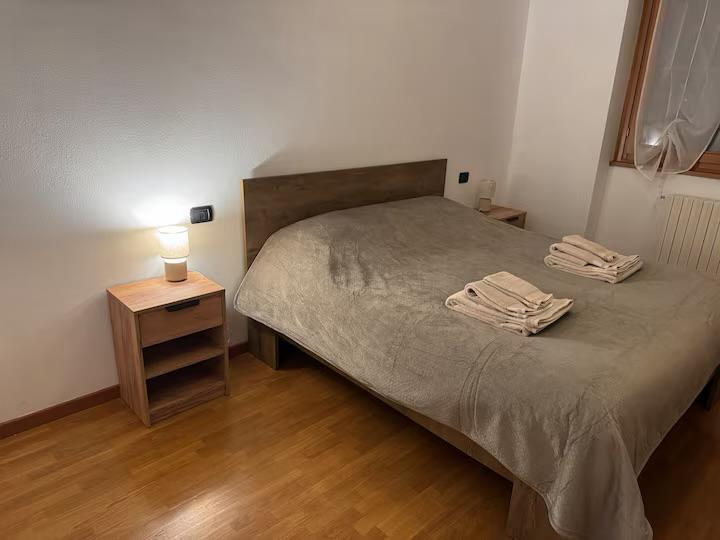

L'appartamento
Tirano
Intero alloggio: appartamento
6 ospiti · 2 camere da letto · 3 letti · 2 bagni





L’alloggio
L’appartamento è pensato per offrire un soggiorno confortevole e rilassante, con ambienti curati e ben organizzati. Gli spazi sono luminosi e accoglienti, ideali per chi desidera sentirsi a casa anche lontano da casa.
Servizi
- Wi-Fi gratuito
- Aria condizionata
- Cucina attrezzata
- Bagno privato
La posizione
Tirius si trova in una zona tranquilla e ben collegata di Tirano, a pochi minuti dal centro e dai principali servizi. È il punto di partenza ideale per escursioni, passeggiate e per raggiungere il Trenino Rosso del Bernina.